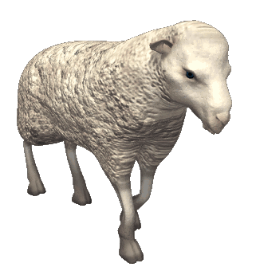

flow: hidden;
cursor: pointer;
}
img {
max-width: 90%;
max-height: 80vh;
object-fit: contain;
}
/* Styl dla przycisku */
.btn-redirect {
margin-top: 20px;
padding: 10px 20px;
background-color: #720646; /* Przykładowy kolor logo - zmień na odpowiedni dla konkretnej partii */
color: #ffffff;
text-decoration: none;
border-radius: 5px;
font-family: Arial, sans-serif;
font-weight: bold;
}

to nie ta strona